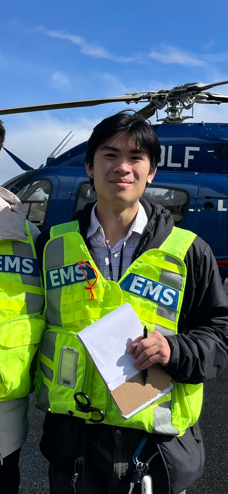

Biochemistry · Medicine · Research
Biochemistry senior at the University of Washington. EMT, competitive climber, and aspiring physician with a passion for immunology, structural biology, and making science accessible.
Experience & Education
Teach introductory climbing classes, coach youth climbers, and assist with facility operations and wall maintenance in a fast-paced community environment.
Facility upkeep, instruction, hold stripping and washing. Nearly four years building communication, teaching, and teamwork skills in a community-oriented setting.
Assisted clinical staff during patient procedures, maintaining strict sterilization and patient care standards in a healthcare setting.
Multi-week experiments spanning plasmid design through bacterial expression, downstream protein purification, analysis, and assay-based characterization.
T cell biology, development, and signaling. Theoretical training in ELISA, Flow Cytometry, Western Blot, Cre-lox Recombination, and Bone Marrow Chimera assays.
DNA sequencing technologies, genome assembly and annotation, gene regulation, and applications of genomics in biology and medicine.
Cumulative GPA: 3.80 · STEM GPA: 3.7 · Dean's List every quarter
Key coursework: Immunology, Biochemistry I–III & Lab, Genome, Physical Chemistry I–II, Organic Chemistry I–III & Lab, Bioethics in Modern Medicine
Pre-hospital medicine, human physiology, rapid decision-making, and teamwork-based patient care. Clinical rotation at Harborview Medical Center.
Looking Ahead
Complete my B.S. in Biochemistry at UW in June 2026, then prepare for the MCAT as the next step toward medical school.
Work in immune research at institutions like the Allen Institute or Fred Hutchinson Cancer Center, contributing to T cell biology and structural biology investigations.
Build clinical experience as an EMT and ER tech, then attend medical school. Interested in orthopedics, family medicine, and bridging research with patient care.
Keep pushing my climbing to double-digit outdoor bouldering grades while advocating for climbing accessibility and building community in the sport.
Outside the Classroom
Training 15–20 hours/week in indoor bouldering across 4 gyms and 6 training boards. USAC regional competitor (7th place). Working toward double-digit outdoor grades.
View training log →NREMT certified with clinical experience at Harborview Medical Center. Passionate about pre-hospital medicine and emergency care.
Play guitar, piano, and trumpet. Music has been a long-standing creative outlet alongside the sciences.
Design and print functional objects, including climbing-related hacks and tools. Enjoy the overlap between engineering problem-solving and hands-on craft.
Building and crafting with wood as a hands-on hobby that balances time in the lab and gym.
Enjoy chess and other strategy games as mental training — the same analytical thinking that shows up in research and climbing.
View chess.com profile →Training in combat sports as a complement to climbing — both demand full-body strength, technique, and mental toughness.
Participated in UW Healthcare Alternative Spring Break, shadowing rural providers and engaging in community health service-learning.
View gallery →Creative pursuits including cosplay and visual art, a different kind of building that channels the same attention to detail as lab work.
Open to research opportunities, clinical shadowing, and conversations about medicine & biochemistry.